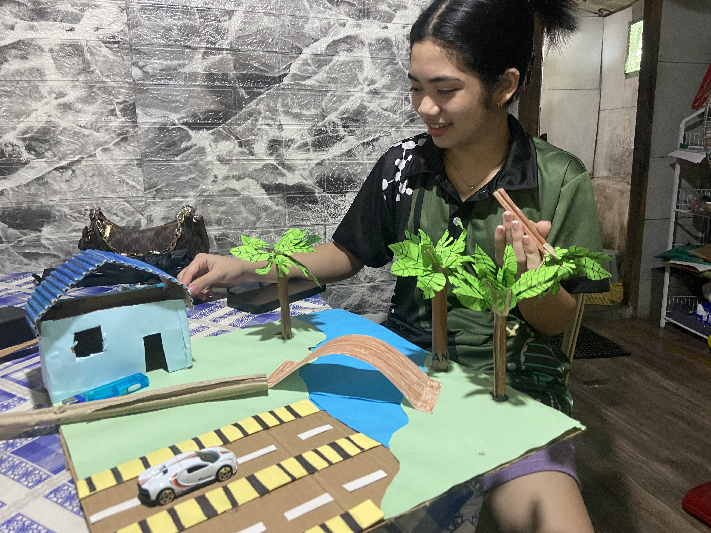

Exploring Math Behind Energy through Conic Applications
Mini Windmill Project
Our Pre-Calculus project focuses on how conic sections are used in designing a mini windmill. These shapes help balance the structure, guide airflow, and improve the energy conversion process. This project connects geometry, measurement, and design to create something useful for clean energy generation.

Guide Questions & Answers
Question 1: How did conic sections influence your design?
→ We used parabolic blades to catch more wind, a circular path for smoother rotation, and an elliptical base for balance. These shapes made our windmill more stable and efficient.
Question 2: What challenges did you face in applying math?
→ It was a bit tricky to measure and cut the curved parts accurately, so we solved it by sketching the shapes first and checking every measurement carefully.
Question 3: How does your model show the link between math and science?
→ Math helps us with precision in design, while science explains how wind turns into energy. Combining both helped us build a working model that really produces electricity.